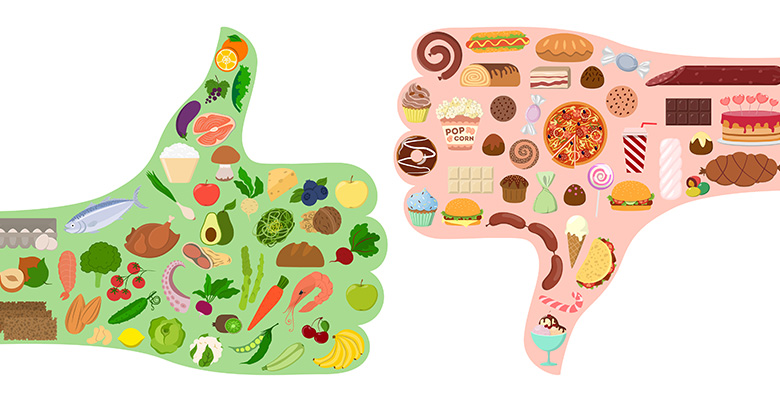

Balanced Bites: A Visual Digest of US Dietary Data

Elevate Your Well-being with Every Bite. Take control of your health by understanding the impact of your food choices—because what you consume, and how much, shapes your tomorrow.
OBJECTIVE
Our study shows the nutritional components of various food groups.
These charts represents a different nutrient (sugar, protein, fat, calories and carbohydrates) in terms of their content measured in grams.
In addition to analyzing the nutrient content in foods, our tool extends its capability to provide a comparative analysis of the average daily consumption of sugar-sweetened beverages among diverse demographic groups. By segmenting the data based on various demographic characteristics, the tool enables individuals to visualize and compare the consumption patterns of sugar-sweetened beverages among groups that mirror their own demographic profile. This dual-focus approach not only highlights the nutritional profiles of different foods but also sheds light on specific consumption trends related to sugar intake, ultimately guiding users towards more mindful eating and drinking habits.
The visualizations aim to provide insights into the nutritional makeup of foods commonly consumed within the U.S. demographic, helping viewers to understand and compare the relative quantities of these nutrients across different food categories. Through these we aim to encourage mindful eating by highlighting the nutritional profiles of different foods.
Concerning Because...
In 2017, 11 million deaths and 255 million DALYs were attributable to dietary risk factors.
High intake of sodium, low intake of whole grains , and low intake of fruits were the leading dietary risk factors for deaths and DALYs globally and in many countries.
A particularly alarming statistic highlights a dietary concern: one in six teenage boys in the U.S. consumes more than 5 kilograms of sugar annually solely from beverages. This consumption far exceeds the American Heart Association's daily sugar intake recommendation, which is capped at 36 grams for men and 25 grams for women. To put this into perspective, a single can of a typical sweetened beverage, such as soda, contains approximately 36 grams of sugar. This amount equals the entire daily recommended limit for men and far surpasses that for women, emphasizing the urgent need for awareness and moderation in the consumption of sugar-sweetened beverages, especially among young populations.
Source: The Lancet
This tool sheds light on dietary composition, aiding in meal planning and nutritional education
so users can make informed decisions about their diet to reduce the risk of chronic diseases.
The plot below shows a prominent presence of carbohydrates in many
food categories, with several categories displaying particularly
high carbohydrate content. By examining the nutrient content of these categories,
one can infer potential health implications.
Protein: 0.8 grams per kilogram of body weight per day for the average sedentary adult. This amount increases for active individuals, athletes, pregnant or breastfeeding women, and older adults to support muscle maintenance and growth, ranging from 1.2 to 2.0 grams per kilogram of body weight per day.
The bar chart is grouped by nutrient type including sugar, protein, fat, and carbohydrates.
This provides a visual comparison of the nutrient content across different food categories,
allowing viewers to identify categories with particularly high or low nutrient content.
This information can be used to make informed dietary choices and to understand the nutritional
profile of different food categories.
The bubble plot shows protein to carbohydrate
content across categories.
General Range: 45% to 65% of total daily calorie intake.
The emphasis is often on complex carbohydrates from whole grains, fruits, and vegetables, rather than simple sugars and refined carbs.
The bubble plot shows protein to fat content across different categories.
General Range: 20% to 35% of total daily calorie intake.
With a focus on healthy fats such as monounsaturated and polyunsaturated fats found in nuts, seeds, avocados, and fatty fish. Saturated fat intake is recommended to be limited to less than 10% of total calories, and trans fats should be avoided.
For individuals who plan their meals, this visualization can quickly highlight which categories are most significant contributors to certain nutritional elements. For example, if a category shows a high contribution to the "Energy_Kcal" metric, it might be consumed in moderation by those watching their caloric intake.
Examples
Active individuals or athletes may require around 1.2 to 2.0 grams per kilogram of protein per their body weight.
High protien, low fat aids in muscle maintennace, weight management to make conscious choices with their diet.
Daily consumption of sweetened beverages: A comparative overview by category
Short Description
WHAT the Visualizations Show: The visualization provides a comparative analysis of the average daily consumption of sugar-sweetened beverages among various demographic groups. These groups are chosen to reflect diverse characteristics, allowing individuals to see the consumption patterns of people similar to them.